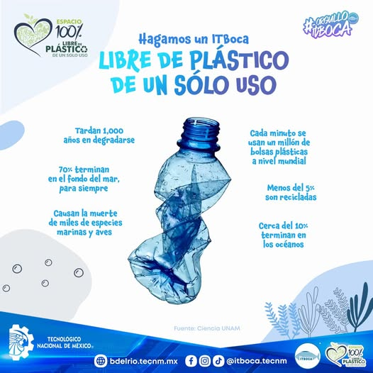
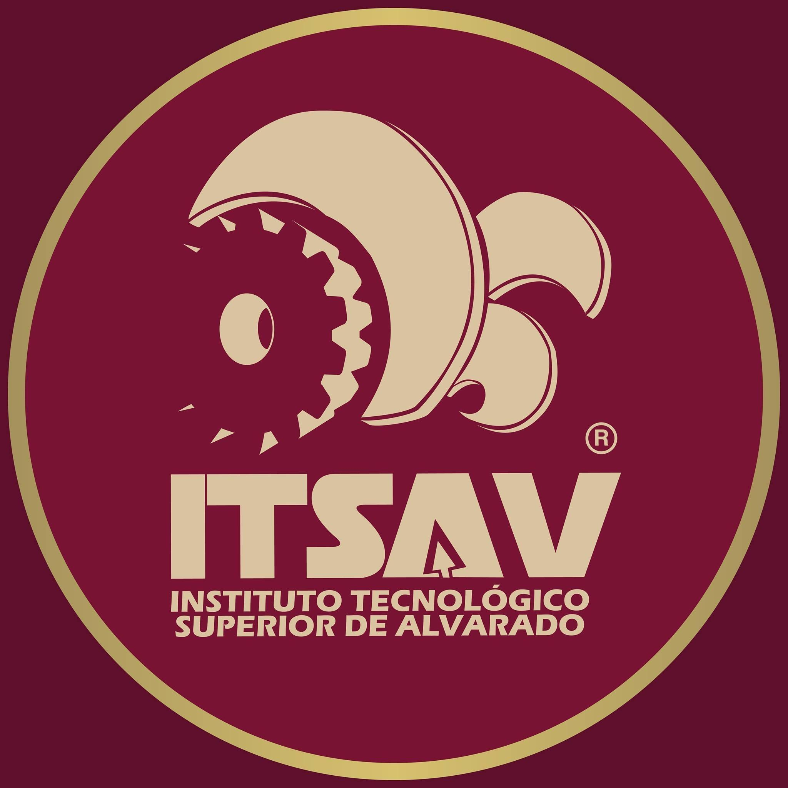
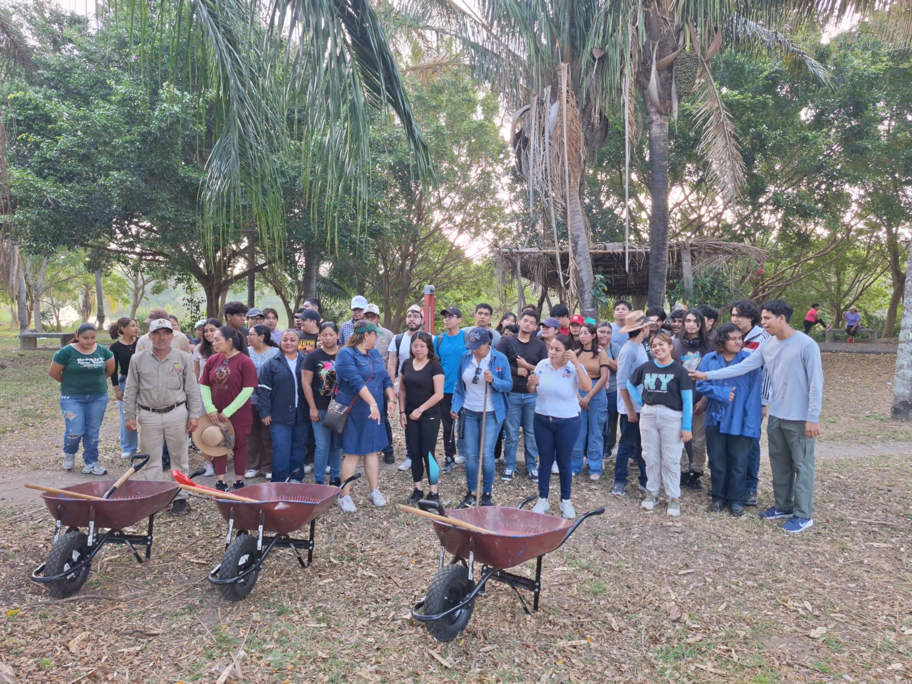
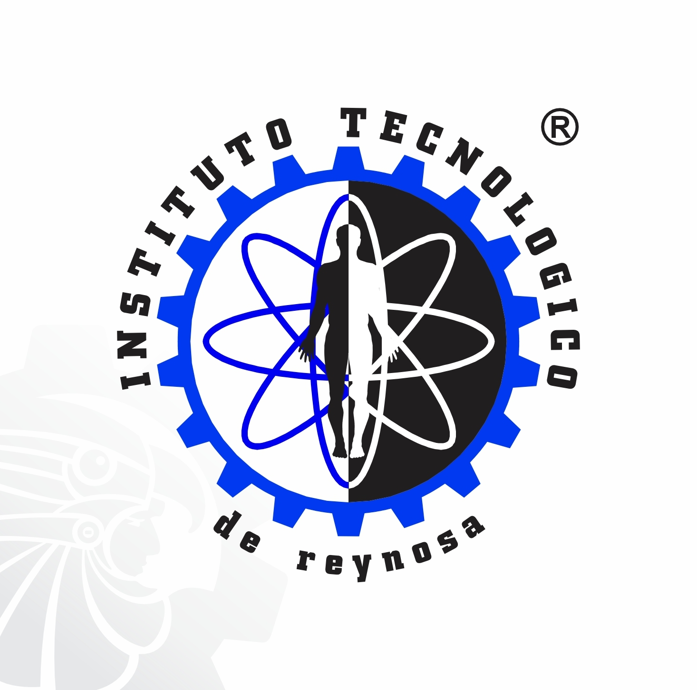
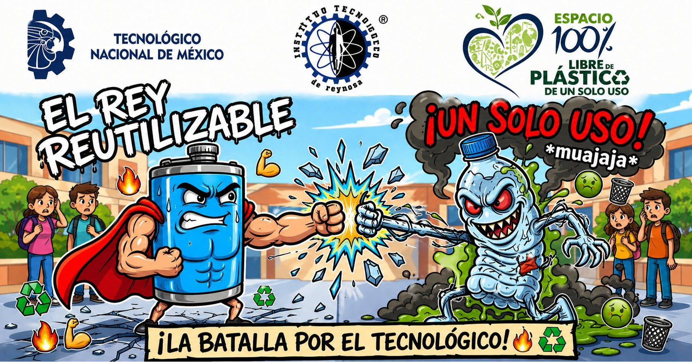
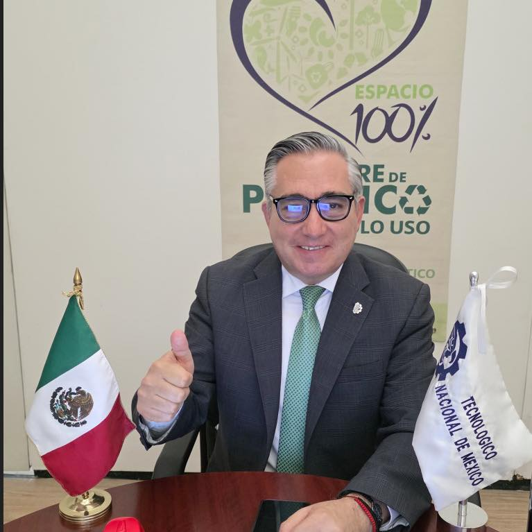

🌍 En ITBoca avanzamos hacia un espacio 100% libre de plásticos de un solo uso.
Los plásticos que usamos por minutos pueden permanecer más de 1,000 años en el ambiente.
Menos del 5% se recicla y millones de piezas terminan en los océanos, donde afectan a miles de especies marinas y aves.
Cada minuto, en el mundo, se utilizan un millón de bolsas plásticas. Muchas de ellas jamás se recuperan y cerca del 10% llega directamente al mar.
💚 Reducir nuestro consumo es una acción urgente y poderosa. Hagamos de ITBoca un ejemplo de responsabilidad ambiental y compromiso con nuestro planeta.


TECNM ALVARADO
Como parte de la iniciativa "TecNM Libre de Plástico de un Solo Uso", se llevó a cabo una jornada de limpieza en el lago de la zona de Puente Moreno. Esta actividad fue posible gracias a la estrecha coordinación con el Ayuntamiento de Medellín de Bravo, encabezado por el Presidente Municipal, el Ing. Samuel Acosta Martínez.
Expresamos nuestro agradecimiento al Ayuntamiento por facilitar las herramientas y materiales necesarios, elementos fundamentales para el éxito de esta labor en favor del medio ambiente.
Gracias al esfuerzo de los participantes, se logró retirar un total de 111 kilos de residuos, entre los que destacan:
✅ Plástico PET.
✅ Bolsas de nailon.
✅ Unicel.


TECNM - REYNOSA
En el Instituto Tecnológico de Reynosa somos un espacio 100% libre de plástico de un solo uso
Súmate al cambio utilizando cilindros o termos reutilizables.
Pequeñas acciones generan grandes impactos.


MANUEL CHAVEZ SAENZ
Reunión de trabajo con la Comisión Nacional de Seguímiento de la Iniciativa "TecNM 100% libre de plástico de un solo uso"
en preparación del Webinar "La eliminación del plástico de un solo uso: una iniciativa para la construcción de un mejor país."